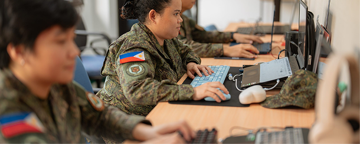
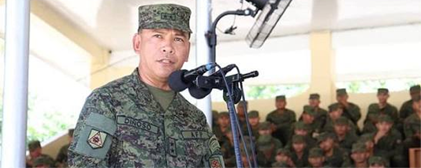
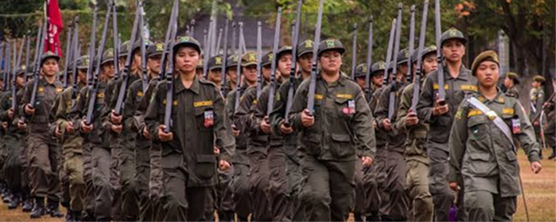

About UnitSync
Traditional unit administration often relies on misplaced clipboards and disconnected messaging channels. UnitSync changes that by bringing modern, military-grade efficiency to daily ROTC operations.
From automated attendance tracking to real-time unit announcements, UnitSync gives student leaders and officers the digital tools they need to maintain accountability, keep cadets informed, and manage records effortlessly.
Features
Real-Time Attendance

Ditch paper sign-in sheets. Cadets check in digitally in seconds, giving officers real-time attendance tracking and instant reports.
Centralized Announcements

Never lose important updates in chat groups. Broadcast drill schedules, urgent alerts, and unit news directly to every cadet's feed.
Secure Cadet Roster

Centralize cadet profiles, service history, and contact info in a secure database—eliminating physical paperwork and lost files.